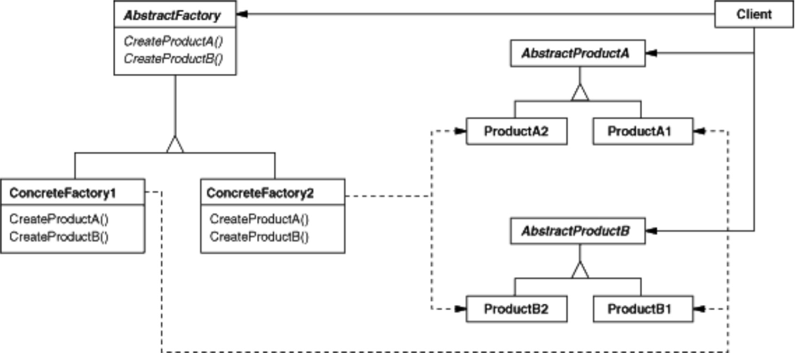
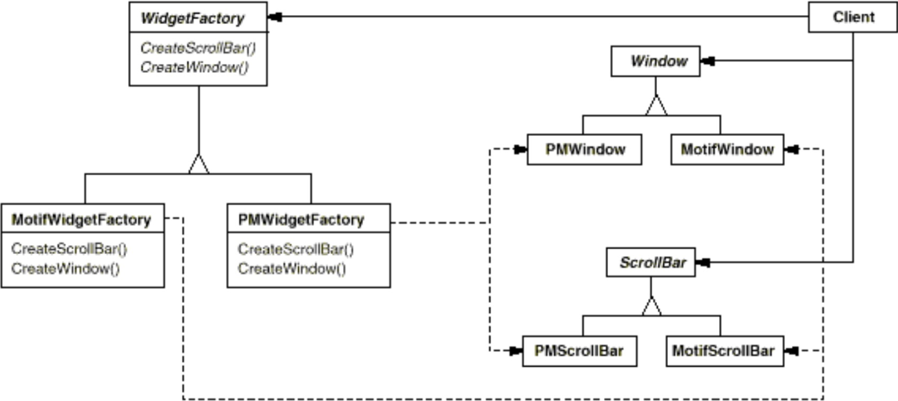

Abstract Factory è un object design pattern creazionale.
Consideriamo di voler implementare un insieme di classi dedicate alla creazione di interfacce grafiche. Gli elementi grafici possono essere creati secondo diversi stili. Per ogni elemento grafico viene definita una classe astratta, mentre per ogni stile ed elemento grafico viene costituita una classe concreta.
I client che creano un’interfaccia grafica devono poter modificare lo stile a seconda delle esigenze, potenzialmente in modo dinamico.
Problema: istanziando esplicitamente i tipi concreti di ciascuno stile, si rende complessa e dispendiosa la modifica dello stile.
class ClientGUI {
public void setupWindow(){
Window w = new PMWindow();
w.setSize(500, 400);
w.addScrollbar(new PMScrollbar());
w.addPanel(setupPanel());
}
public Panel setupPanel() {
Panel p = new PMPanel();
return p;
}
}
Gli obiettivi del pattern Abstract Factory sono i seguenti:


abstract class WidgetFactory {
public abstract Window createWindow();
public abstract Panel createPanel();
public abstract Button createButton();
public abstract Scrollbar createScrollbar();
}
abstract class PMWidgetFactory {
public Window createWindow() {
return new PMWindow();
}
public Panel createPanel {
return new PMPanel();
}
public Button createButton {
return new PMButton();
}
public Scrollbar createScrollbar {
return new PMScrollbar();
}
}
abstract class MotifWidgetFactory {
public Window createWindow() {
return new MotifWindow();
}
public Panel createPanel {
return new MotifPanel();
}
public Button createButton {
return new MotifButton();
}
public Scrollbar createScrollbar {
return new MotifScrollbar();
}
}
class ClientGUI {
WidgetFactory factory = new PMWidgetFactory();
public void setupWindow() {
Window w = factory.createWindow();
w.setSize(500, 400);
w.addScrollbar(factory.createScrollbar());
w.addPanel(setupPanel());
}
public Panel setupPanel() {
Panel p = factory.createPanel();
Button b = factory.createButton();
p.add(b);
return p;
}
}